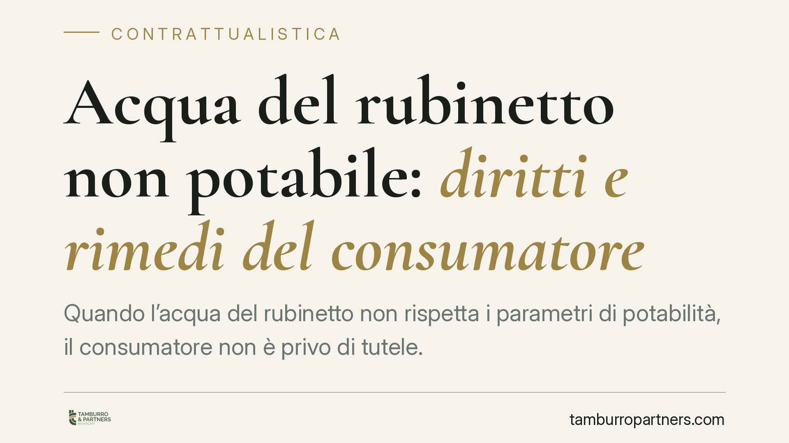

Acqua del rubinetto non potabile: diritti e rimedi del consumatore
Quando l'acqua del rubinetto non rispetta i parametri di potabilità, il consumatore non è privo di tutele. Il rapporto con il gestore idrico è un contratto e la fornitura di acqua non conforme può integrare un inadempimento. Chiarire la natura del rapporto è il primo passo per individuare il rimedio corretto ed evitare errori sui termini da rispettare.

Il fatto e perché conta
Capita che le analisi dell'Autorità sanitaria o del gestore rilevino valori fuori norma: presenza di batteri, sostanze chimiche oltre i limiti, torbidità anomala. In questi casi il Comune emette spesso un'ordinanza che vieta l'uso dell'acqua a fini potabili.
Per il consumatore la domanda è duplice: continuo a pagare un servizio che non ricevo correttamente e ho subìto un danno? La risposta dipende da come si inquadra giuridicamente il rapporto con l'ente gestore.
Inquadramento normativo
I parametri di potabilità sono fissati dal d.lgs. n. 31/2001, che recepisce la disciplina europea sulle acque destinate al consumo umano. La norma indica i valori limite per i parametri microbiologici e chimici e attribuisce ai gestori l'obbligo di erogare acqua conforme, sotto il controllo delle Autorità sanitarie.
Sul piano civilistico va chiarito un punto spesso confuso. La fornitura idrica non è una compravendita: è pacificamente un contratto di somministrazione, disciplinato dagli artt. 1559 e ss. cod. civ., cioè un contratto con cui una parte si obbliga a eseguire prestazioni periodiche o continuative di una cosa (qui, l'acqua) verso un corrispettivo.
Questa qualificazione ha una conseguenza pratica rilevante. La garanzia per vizi propria della vendita, con il breve termine di decadenza di otto giorni previsto dall'art. 1495 cod. civ., non trova applicazione diretta nella somministrazione. L'art. 1495 può rilevare, semmai, solo in via residuale e va argomentato caso per caso: presentarlo come regola generale rischia di indurre in errore.
Il rimedio di riferimento resta quello generale contro l'inadempimento: l'art. 1453 cod. civ., che consente al contraente non inadempiente di chiedere l'adempimento o la risoluzione del contratto, in entrambi i casi con il risarcimento del danno. La giurisprudenza di merito ha in più occasioni riconosciuto la responsabilità del gestore per erogazione di acqua non conforme ai parametri di legge.
Termini: decadenza e prescrizione non si confondono
È il punto su cui è più facile sbagliare. Il termine di otto giorni dell'art. 1495 cod. civ. è un termine di decadenza legato alla vendita. Nella somministrazione, invece, l'azione per inadempimento è soggetta alla ordinaria prescrizione decennale (art. 2946 cod. civ.), salvo diverse pattuizioni o discipline specifiche.
In concreto: chi riceve acqua non potabile non deve sentirsi vincolato al termine brevissimo tipico dei vizi della cosa venduta. Resta però essenziale attivarsi con tempestività per documentare il problema.
Implicazioni pratiche
Per il consumatore le tutele possono muoversi su tre piani.
- Adempimento e riduzione del corrispettivo: se il servizio è erogato in modo difettoso, si può contestare la fatturazione e chiedere il ripristino della conformità.
- Danno patrimoniale: spese sostenute per l'acquisto di acqua alternativa, per accertamenti sanitari, per interventi sull'impianto. Vanno documentate.
- Danno non patrimoniale: eventuali pregiudizi alla salute. Qui va detto con chiarezza che il risarcimento non è automatico: occorre provare sia il danno sia il nesso causale tra l'acqua non conforme e il pregiudizio lamentato. È il profilo più difficile da dimostrare.
Cosa fare in concreto
- Conservate le prove. Raccogliete referti delle analisi, ordinanze comunali, comunicazioni del gestore e scontrini delle spese sostenute.
- Segnalate per iscritto. Inviate reclamo formale al gestore e, se del caso, segnalazione all'Autorità sanitaria e al Comune, tramite PEC o raccomandata.
- Documentate il danno. Tenete traccia degli acquisti di acqua sostitutiva e delle eventuali spese mediche, con date e importi.
- Non pagate al buio. Verificate le fatture del periodo interessato e contestate gli importi relativi a un servizio non conforme, senza sospendere unilateralmente i pagamenti senza aver prima formalizzato la contestazione.
- Inquadrate correttamente il rapporto. È opportuno verificare preliminarmente l'inquadramento del rapporto e i termini applicabili prima di scegliere il rimedio, perché confondere decadenza e prescrizione può pregiudicare l'azione.
In sintesi
La fornitura di acqua non potabile è, nella normalità dei casi, un inadempimento di un contratto di somministrazione. Gli strumenti ci sono, ma vanno azionati con documentazione solida e nel corretto inquadramento giuridico. Il risarcimento del danno alla salute, in particolare, richiede la prova del nesso causale e non può darsi per scontato.
---
Contributo informativo a cura di Tamburro & Partners Avvocati. Non costituisce parere legale.
Ogni contratto ha il suo equilibrio.
Se vuoi una revisione delle clausole o una redazione su misura, scrivi allo studio. Ti rispondiamo entro un giorno lavorativo.